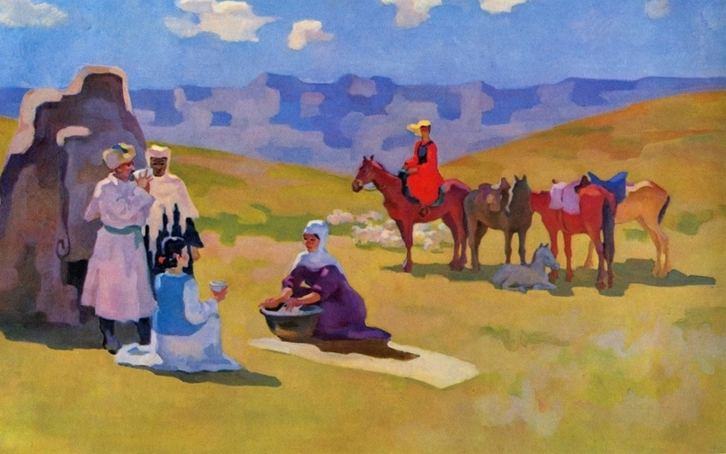

Sabur Mambeyev

Details:
b. 1928, Kazakhstan, Semey

Sabur Mambeyev, Spring in the Mountains, 1976, 210 cm x 140 cm, Oil on Canvas.
Sabur Mambeyev: Pioneer of Modern Kazakh Painting
Sabur Mambeyev is celebrated for his bold and innovative approach to color and form, often focusing on landscapes, historical themes, and portraits. His works showcase Kazakhstan's rich culture and natural beauty, imbued with modern techniques that revolutionized Kazakh art.
Mambeyev's signature style is recognized for its dynamic compositions, vivid colors, and emotional depth, making him a key figure in the Kazakh art world.